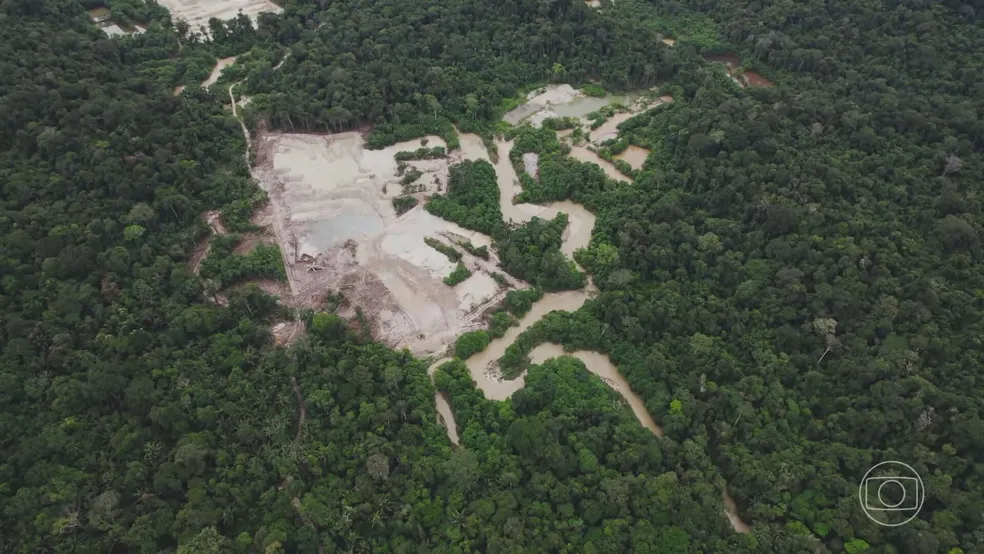

Notícias

Governo deve demarcar mais 6 territórios índigenas.
Declaração da ministra dos Povos Indígenas foi feita uma conferência sobre empreendedorismo social realizada em Oxford, no Reino Unido. Governo homologou a demarcação de apenas 8 de 14 territórios prometidos em 2023.
Ver mais...

Governo anuncia R$ 730 milhões para municípios na Amazônia.
União mapeou 70 cidades 'prioritárias' que concentram desmate; 53 já aderiram. Promessa de zerar desmatamento foi feita no âmbito do acordo de Paris; país ainda está longe de cumprir.
Ver mais...
Ibama conclui soltura recorde de 179 mil quelônios na foz do Rio Amazonas.
Última ação da 41ª edição do Programa Quelônios da Amazônia realizou a soltura de 15 mil animais neste sábado (6), no município de Afuá (PA). Iniciativa é da superintendência do instituto no Amapá.
Ver mais...